EXAMPLE 1: If $X$ is uniformly distributed over $[0,2],$ then find a density for $X^2.$
SOLUTION: Let $Y = X^2.$ A density for $X$ is $f(x) = \frac 12$ if $0\leq x\leq 2$ (and 0 else). We shall pass to the CDF of $X:$ $$F(x) = \left\{\begin{array}{ll}0&\text{if }x < 0\\ \frac x2&\text{if }0\leq x < 2\\ 1&\text{otherwise.}\end{array}\right. $$ From this we shall compute the CDF of $Y.$ Clearly, $Y$ cannot take values outside $[0,4].$ So $G(y) = 0$ if $y<0$ and $G(y) = 1$ if $y\geq 2.$ Let $y\in[0,2).$ Then $$G(y) = P(Y\leq y) = P(X^2\leq y) = P(X\leq \sqrt y) = \frac 12\sqrt y.$$ Differentiating this, we arrive at the required density of $Y$ as $$g(y) = G'(y) = \left\{\begin{array}{ll}\frac{1}{4\sqrt y}&\text{if }y\in[0,2]\\ 0&\text{otherwise.}\end{array}\right.$$ ■ You see the advantage of monotonicity. Even though $x\mapsto x^2$ is a not a monotone function over ${\mathbb R},$ it is so when restricted to $[0,2].$ The CDF technique can handle even some simple non-monotonic cases, as we show now.EXAMPLE 2: Let $X$ be uniform over $[-1,1].$ Find the density of $X^2.$
SOLUTION: Clearly, $Y=X^2$ cannot go outside $[0,1].$ So its CDF $G(y)$ must have $G(y)=0$ for $y<0$ and $G(y)=1$ for $y\geq 1.$ For $y\in[0,1)$ we have $$G(y) = P(X^2\leq y) = P(-\sqrt y \leq X \leq \sqrt y) = \sqrt y.$$ Differentiating we get the density $$g(y) = \left\{\begin{array}{ll}\frac{1}{2\sqrt y}&\text{if }y\in[0,1]\\ 0&\text{otherwise.}\end{array}\right. $$ ■EXERCISE 1: If $X$ has density $f(x)=\left\{\begin{array}{ll}2x&\text{if }x\in(0,1)\\ 0&\text{otherwise.}\end{array}\right.$, then find density of $X^2.$
EXERCISE 2: If $X$ has constant density over $(0,1)$ and zero outside it, then guess the density of $1-X$, and prove your guess.
EXERCISE 3: If $X$ has density $f(x)$, then the density of $-X$ is
EXERCISE 4: If $(X,Y)$ has joint density $f(x,y) = \frac{1}{2\pi} e^{-\frac 12(x^2+y^2)},$ then find the density of $R = \sqrt{X^2+Y^2}.$
EXERCISE 5: If $(X,Y)$ is uniformly distributed over the unit disc in ${\mathbb R}^2,$ and we write $(X,Y)$ as $(R,\Theta)$ in polar coordinates where $\Theta\in[0,2\pi),$ then find density of $R$ and also the density of $\Theta.$
EXERCISE 6: Let $X_1,...,X_n$ be IID with density $f(x).$ Find a density for $\x 1$, the minimum.
EXERCISE 7: If $X_1,...,X_5$ are IID with density $f(x)=\left\{\begin{array}{ll}2 e^{-2x}&\text{if }x>0\\ 0&\text{otherwise.}\end{array}\right.$, find density of $\x 5.$
EXERCISE 8: If $X_1,...,X_n$ are IID with density $f(x)=\left\{\begin{array}{ll}\frac 1\theta&\text{if }x\in(0,\theta)\\ 0&\text{otherwise.}\end{array}\right.$, find a constant $c$ such that $E(c\x n)=\theta.$
EXAMPLE 3: Let $X_1, X_2$ be IID with density $f(x)$ and CDF $F(x).$ Show that the joint CDF of $(\x 1, \x 2)$ (call it $G(x,y)$, say) is free of $x$ when $x>y.$ So what will be $\frac{\partial^2}{\partial x\partial y} G(x,y)$ in this case?
SOLUTION: To keep things concrete, let's first work with $x=3$ and $y=2.$ Then $G(3,2) = P(\x 1\leq 3,\x 2\leq 2) = P(\x 2\leq 2),$ since $\{\x 1\leq 3,\, \x 2\leq 2\} = \{\x 2\leq 2\}. $ More generally, if $x > y,$ then $G(x,y)$ is going to be free of $x.$ So we have $\frac{\partial^2}{\partial x\partial y} G(x,y) = 0$ if $x > y.$ ■ If we work with $X_1,...,X_n$ instead of just $X_1,X_2,$ then the same argument would show that $\frac{\partial^n}{\partial x_1\cdots\partial x_n} G(x_1,...,x_n) = 0$ unless $x_1\leq x_2\leq\cdots\leq x_n.$EXAMPLE 4: Same set up as in the last example. Now find $G(x,y)$ for $x < y.$ Again find $\frac{\partial^2}{\partial x\partial y} G(x,y).$
SOLUTION: Let us start with $x=3$ and $y=2.$ Then $G(2,3) = P(\x 1\leq 2,\, \x 2\leq 3).$ By the inclusion-exclusion principle, this is $P(X_1\leq 2,\, X_2\leq 3)+P(X_1\leq 3,\, X_2\leq 2)-P(X_1\leq 2,\, X_2\leq 2)=F(2)F(3)+F(3)F(2)-F(2)^2.$ In general, for $x < y$ we have $G(x,y) = 2F(x)F(y)-F(x)^2.$ The last term will be killed when we differentiate wrt $y.$ The first term will produce $2f(x)f(y).$ So $\frac{\partial^2}{\partial x\partial y} G(x,y)= 2f(x)f(y).$ ■ Again, if we work with $X_1,...,X_n$ instead of just $X_1,X_2,$ then the same argument would show that $\frac{\partial^n}{\partial x_1\cdots\partial x_n} G(x_1,...,x_n) = n!f(x_1)f(x_2)\cdots f(x_n)$ if $x_1\leq x_2\leq\cdots\leq x_n.$ Combining our findings from the two example, we get the following theorem.EXERCISE 9: If $X_1,X_2,X_3$ are IID with density $f(x)=\left\{\begin{array}{ll}1&\text{if }x\in(0,1)\\ 0&\text{otherwise.}\end{array}\right.$, find density of $\x 2.$
EXERCISE 10: If $X_1,...,X_n$ are IID with common CDF $F(x),$ then show that the CDF of $\x k$ is $$P(\x k\leq x) = \sum_{j=k}^n \binom n j F(x)^j(1-F(x))^{n-j}.$$
EXERCISE 11: If $X_1,...,X_n$ are IID with common density $f(x),$ then find density of $\x k.$
EXAMPLE 5: If $X_1,...,X_{20}$ are IID with density $f(x),$ then write down the joint density of $(\x 3, \x 4, \x 7, \x {15}).$
SOLUTION: We can of course derive the required joint density by starting with the joint density of $(\x 1,...,\x {20})$ and then integrating over all $\x i$ for $i\not\in\{3,4,7,15\}.$ But there is a simple heuristic alternative worth learning. Let the required joint density be $g(a,b,c,d).$ Think of it like this: if, for some very small $\epsilon > 0$ we write $x\approx y$ to mean $x\in\left(y-\frac \epsilon2,y+\frac \epsilon2\right),$ then $$P(\x 3\approx a,\, \x 4\approx b,\, \x 7\approx c,\, \x {15}\approx d)\approx g(a,b,c,d) \epsilon^4.$$ The heuristic technique tries to find the probability directly using combinatorics (and a pinch of salt). Consider the number line below, and think of how the $\x i$'s are scattered along it.EXERCISE 12: Check that this heutistic method gives the same density for $\x 1$ and $\x n$ that we obtained earlier.
EXERCISE 13: Write down the joint density of $(\x 1, \x n)$ using this heuristic method.
EXERCISE 14: Let $X_1,...,X_{15}$ be a random sample from a distribution with density $f(x).$ Write down a density for the sample median. Sample median is the central value among the $X_i$'s, i.e., $\x 8$ in this case.
EXERCISE 15: If $X$ has density $f(x)$, then find density of $aX+b$ for $a\neq 0$ and $b\in{\mathbb R}.$
EXERCISE 16: If $X$ has density $f(x) =\left\{\begin{array}{ll}c\, x e^{-x}&\text{if }x>0\\ 0&\text{otherwise.}\end{array}\right. $, then find density of $Y = \sqrt{X}.$
EXERCISE 17: Let $X$ have density $f(x) = \left\{\begin{array}{ll}2 e^{-2x}&\text{if }x>0\\ 0&\text{otherwise.}\end{array}\right.$ Find density of $Y=X^2$ using (*).
EXERCISE 18: Let $X$ have density $f(x).$ Find density of $Y=a X+b$ using (*) if $a\neq 0.$
EXERCISE 19: Let $X$ have uniform distribution over $(-1,1).$ Find density of $Y=\sin X$ using (*).
| 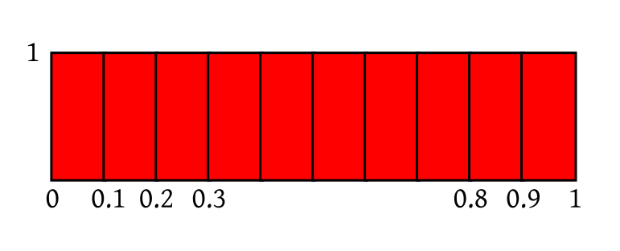 |
|---|
| All the rectangles are identical |
| 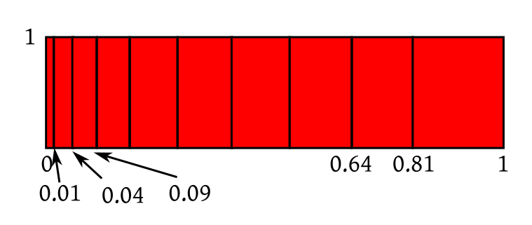 |
|---|
| Rectangles are squeezed and stretched |
| 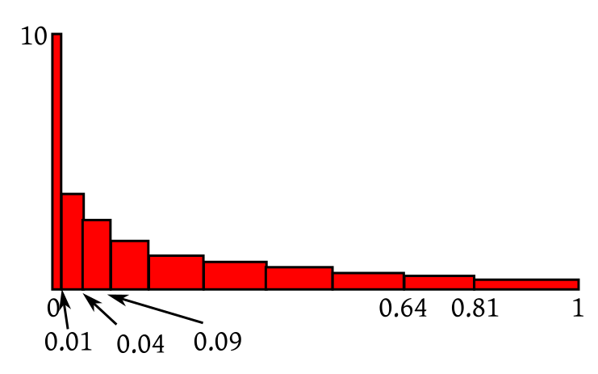 |
|---|
| All rectangles now again have area $\frac{1}{10}.$ |
EXERCISE 20: If $X$ has uniform distribution over (2,4) then roughly sketch the density of $Y = \frac 1X.$ Don't apply the Jacobian formula algeraically. Think in terms of which part gets squeezed/expanded.
EXERCISE 21: Suppose that $X$ is uniform over $(-1,1)$ and $Y=X^2.$ (not a bijection!). Guess the form of the density of $Y.$ Do you see why we needed the transform to be bijective in our intuition?
EXAMPLE 6: Let $f:{\mathbb R}^2\rightarrow{\mathbb R}^2$ be $f(x_1,x_2) = (\sin (x_1x_2),\, x_1-x_2^2).$ Find its Jacobian. Also find the determinant of the Jacobian.
SOLUTION: Note that $f$ consists of two function $f_1,f_2:{\mathbb R}^2,\rightarrow{\mathbb R}.$ These are its component functions, $f_1(x_1,x_2) = \sin(x_1x_2)$ and $f_2(x_1,x_2) = x_1-x_2^2.$ The Jacobian is a $2\times 2$ matrix with $(i,j)$-th entry $\frac{\partial f_i}{\partial x_j}.$ Note that each row is devoted to a single $f_i$ and each column to a single $x_j.$ In general, if we had $f:{\mathbb R}^n\rightarrow{\mathbb R}^m$ the matrix would have been $m\times n.$ In our case $$\begin{eqnarray*} \frac{\partial f_1}{\partial x_1} & = & x_2\cos (x_1x_2),\\ \frac{\partial f_1}{\partial x_2} & = & x_1\cos (x_1x_2),\\ \frac{\partial f_2}{\partial x_1} & = & 1\\ \frac{\partial f_2}{\partial x_2} & = & -2x_2. \end{eqnarray*}$$ So the Jacobian is $$\left[\begin{array}{ccccccccccc}x_2\cos (x_1x_2) & x_1\cos (x_1x_2)\\ 1 & -2x_2 \end{array}\right].$$ Its determinant is $$x_2\cos (x_1x_2)\times(-2x_2)- x_1\cos (x_1x_2)\times 1 = -(2x_2^2+x_1)\cos (x_1x_2).$$ ■If all this looks like unmotivated magic, you might benefit from this introductory video that I have made for Jacobians. The video is about 21 min long, which is too long for my taste. You may like to navigate to relevant portions of it using the following guideline:
EXERCISE 22: Compute the Jacobian matrix for $h(x,y) = (x+y,x-y).$
EXERCISE 23: What is the Jacobian matrix for the transform $h:{\mathbb R}^n\rightarrow{\mathbb R}^n$ where $h(\v x) = A\v x+\v b$ for some matrix $A_{n\times n}$ and vector $\v b_{n\times 1}$?
EXAMPLE 7: Let $\v X = (X_1,X_2)$ be uniformly distributed over $[1,2]\times[3,4].$ Let $Y_1 = X_1X_2$ and $Y_2 = X_1.$ Find the joint density of $\v Y = (Y_1,Y_2).$
SOLUTION: Let $S = [1,2]\times[3,4].$ Here the transform is $h(x_1,x_2) = (x_1x_2,x_1).$ Clearly, $h:S\rightarrow h(S)$ is a bijection, because given $y_1=x_1x_2$ and $y_2=x_1$ you can recover $(x_1,x_2)\in[1,2]\times[3,4]$ uniquely. The inverse transform is $h ^{-1}(y_1,y_2) = \left(y_2,\frac{y_1}{y_2}\right).$ The Jacobian of this is $$\left[\begin{array}{ccccccccccc}0 & 1\\\frac{1}{y_2} & -\frac{y_1}{y_2^2} \end{array}\right],$$ which has absolute determinant $\frac{1}{y_2},$ since $y_2 > 0.$ So the required density will be $$g(y_1,y_2) = \left\{\begin{array}{ll}\frac{1}{y_2}&\text{if }\left(y_2,\frac{y_1}{y_2}\right)\in S\\ 0&\text{otherwise.}\end{array}\right.$$ Often we want to write it as $$g(y_1,y_2) = \left\{\begin{array}{ll}\frac{1}{y_2}&\text{if }(y_1,y_2)\in T\\ 0&\text{otherwise.}\end{array}\right.$$ for some suitably defined $T.$ This may be done as follows. $\left(y_2,\frac{y_1}{y_2}\right)\in S$ means $$1\leq y_2 \leq 2 \mbox{ and } 3\leq \frac{y_1}{y_2}\leq 4.$$ Sketching these restrictions we get this region:| $T$ shown in red |
|---|
EXERCISE 24: If $(X,Y)$ has joint density $f(x)=\left\{\begin{array}{ll}x+y&\text{if }x,y\in[0,1]\\ 0&\text{otherwise.}\end{array}\right.$, then find the joint density of $(X+Y, X-Y).$
EXERCISE 25: If $(X,Y)$ is uniformly distributed over $[0,1]\times[0,2]$, then find the joint density of $(X^2,X+Y).$
EXERCISE 26: If $(X,Y)$ is uniformly distributed over the red rectangle below, then find non-zero constants $a,b,c,d$ such that $U=aX+bY$ and $V=cX+dY$ are independent.
| 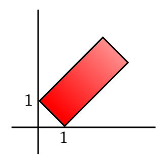 |
|---|
EXAMPLE 8: Let $(X_1,X_2)$ have joint density $f(x_1,x_2).$ Find density of $X_1+X_2.$
SOLUTION: Consider $(Y_1,Y_2) = (X_1,X_1+X_2).$ Here the transform is $h(x_1,x_2) = (x_1,x_1+x_2).$ This is a bijection from ${\mathbb R}^2$ to ${\mathbb R}^2$ with inverse $h ^{-1}(y_1,y_2) = (y_1,y_2-y_1).$ The Jacobian matrix is $\left[\begin{array}{ccccccccccc}1 & 0\\-1 & 1 \end{array}\right]$, with absolute determinant 1. So the required density is $$g(y_1,y_2) = f(y_1,y_2-y_1). $$ Now we need to find the marginal density of $Y_2.$ This is $$g_2(y_2) = \int_{-\infty}^\infty g(y_1,y_2)\, dy_1 = \int_{-\infty}^\infty f(y_1,y_2-y_1)\, dy_1.$$ ■ The result is quite useful, and worth recording as a theorem: A special case is when the two random variables are independent: This gives us a way to manufacture a new density by combining two existing densities. This is called convolution.EXAMPLE 9: If $X,Y$ are independent uniform over $(0,1),$ then find density of $X+Y.$
SOLUTION: The answer is $f*f,$ where $f(x) =\left\{\begin{array}{ll}1&\text{if }0 < x < 1\\ 0&\text{otherwise.}\end{array}\right. $ So $$(f*f)(u) = \int_{-\infty}^\infty f(x)f(u-x)\, dx = \int_{\max\{0,u-1\}}^{\min\{1,u\}}dx=\left\{\begin{array}{ll}u&\text{if }0 <u < 1\\ 2-u&\text{if }1 <u < 2\\ 0&\text{otherwise.}\end{array}\right.$$ To see this notice that for $f(x)$ to be nonzero we need $0 < x < 1,$ while for $f(u-x)$ to be non-zero we need $0 < u-x < 1,$ or $u > x >u-1.$ So for $f(x)f(u-x)$ to be non-zero we need $1,u > x >0,u-1.$ Also, the non-zero value of $f(x)f(u-x)$ is 1. ■EXERCISE 27: Show that $f*g = g*f.$
EXERCISE 28: Does there exist a density $i(x)$ such that for all densities $f$ we have $i*f = f?$
EXERCISE 29: If $X,Y$ are IID with common density $\lambda e^{-\lambda x}$ ($x>0$), then find the density of $X+Y.$
EXERCISE 30: If $X,Y$ are independently distributed uniformly over $(0,1),$ the sketch density of $X+Y.$
EXERCISE 31: If $X,Y$ are independent with common density $f(x)$, what will density of $X-Y$ be?
Proof: Use the Jacobian technique for the transform $(X,Y)\mapsto \left(\frac XY,Y\right)\equiv(Z,U).$ [QED]
EXERCISE 32: Prove the above theorem using Jacobian.
EXERCISE 33: If $X,Y$ are independent and uniformly distributed over $[1,2],$ then find density of $X/Y.$
EXERCISE 34: If $X,Y$ are IID with common density $f(x)=\left\{\begin{array}{ll}e^{-x}&\text{if }x>0\\ 0&\text{otherwise.}\end{array}\right.$, then find density of $X/Y.$
EXERCISE 35: A point $Q$ is chosen at random from the unit square. Let $Q$ be $(R,\Theta)$ in polar coordinates. Find density of $\tan\Theta.$
EXAMPLE 10: Find the CF of $X$ having density $f(x) = \left\{\begin{array}{ll} 3 e^{-3x}&\text{if }x>0\\ 0&\text{otherwise.}\end{array}\right. $
SOLUTION: $$E(e^{iXt}) = 3\int_0^ \infty e^{ixt}e^{-3x}\, dx = 3\int_0^\infty e^{(it-3)x}\, dx = \frac{3}{3-it}$$ for $t\in{\mathbb R}.$ ■ Clearly, for any random variable $X$ we have $\xi_X(0) = 1.$EXERCISE 36: Find CF for the degenerate distribution at $5.$
EXERCISE 37: Find CF for the uniform distribution over $(-1,1).$
Proof:Will be done next semester.[QED]
Proof: Since $X,Y$ are independent, hence so are their functions $e^{iXt}$ and $e^{iYt}.$
Since their expectations are finite, so $E(e^{iXt}\times e^{iYt}) = E(e^{iXt})\times E(e^{iYt}).$ Hence the result. [QED] If we know a list of CFs for some standard distributions, then these two results often help us to identify if the convolution of two distributions in our list again belong to the list. Here is an example.EXAMPLE 11: Suppose that you are told that, for $a>0$, the distribution with density $f_a(x) = \left\{\begin{array}{ll}c x^{a-1}e^{-x}&\text{if }x>0\\ 0&\text{otherwise.}\end{array}\right.$ has CF $\xi_a(t) = (1-it)^{-a}.$ for $t< 1.$
Show that for $a,b>0$ we have $f_a* f_b = f_{a+b}.$ SOLUTION: You can of course show this directly using the definition of convolution. But that would require you to compute an integral. But it is trivial using CF: $\xi_a(t)\xi_b(t) = (1-it)^{-a} (1-it)^{-b} = (1-it)^{-(a+b)}$ for $t \in{\mathbb R}.$ Since CF uniquely determines the distribution, we get the result. ■EXERCISE 38: Let $X$ have CF $\xi_X(t).$ Let $Y = ax+b.$ Find $\xi_Y(t),$ the CF of $Y.$
EXERCISE 39: [hpstrans1.png]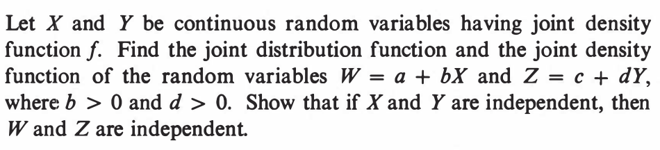
::EXERCISE 40: [hpstrans2.png]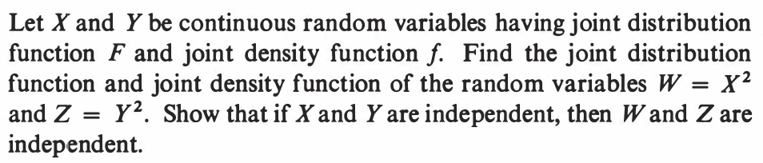
::EXERCISE 41: [hpstrans4.png]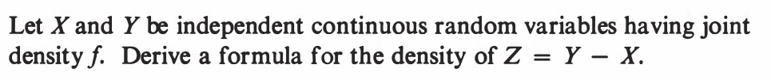
::EXERCISE 42: [hpstrans7.png]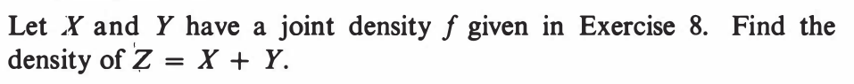
::EXERCISE 43: [hpstrans8.png]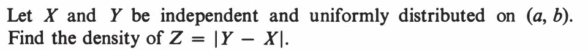
::EXERCISE 44: [hpstrans9.png]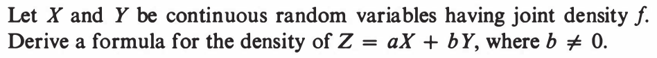
::EXERCISE 45: [hpstrans12.png]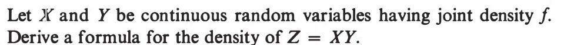
::EXERCISE 46: [hpstrans14.png]
::EXERCISE 47: [hpstrans21.png]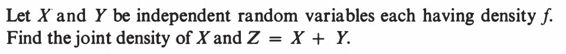
::EXERCISE 48: [hpstrans23.png]
::EXERCISE 49: [hpstrans24.png]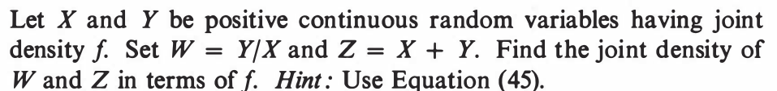
::EXERCISE 50: [hpspdf7.png]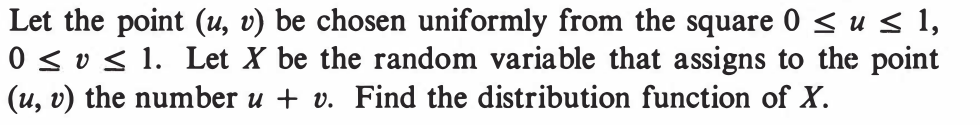
::EXERCISE 51: [hpspdf11.png]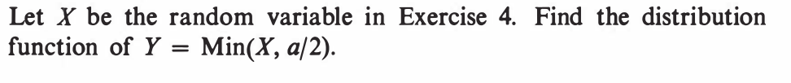
::EXERCISE 52: [hpspdf15.png]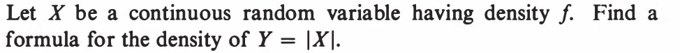
::EXERCISE 53: [hpspdf16.png]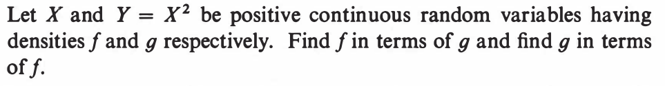
::EXERCISE 54: [hpspdf17.png]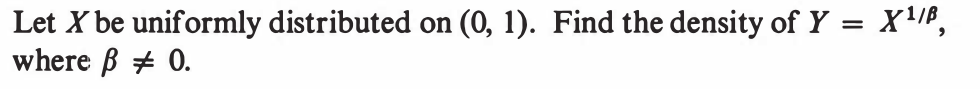
::EXERCISE 55: [hpspdf18.png]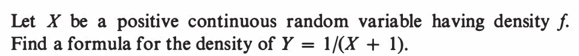
::EXERCISE 56: [hpspdf19.png]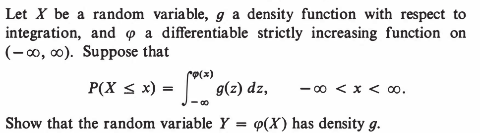
::EXERCISE 57: [hpspdf20.png]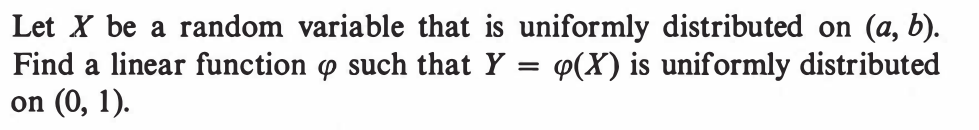
::EXERCISE 58: [hpspdf24.png]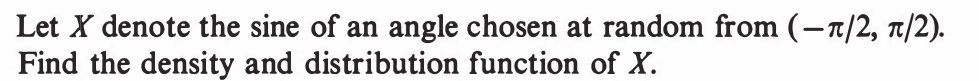
::EXERCISE 59: [hpspdf40.png]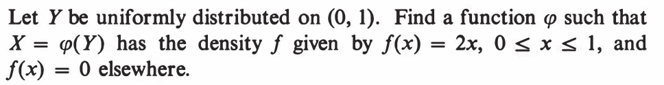
::EXERCISE 60: [hpspdf45.png]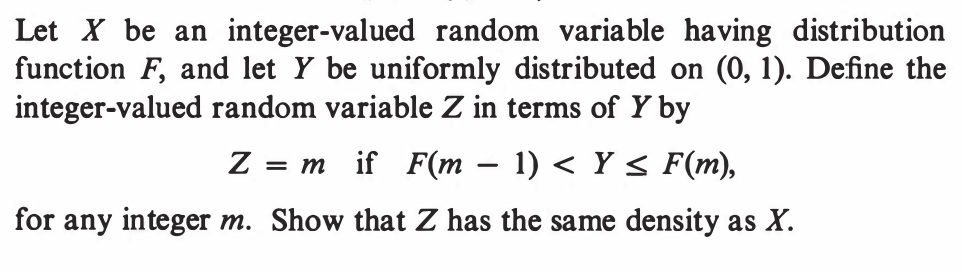
::EXERCISE 61: [rosspdf19.png]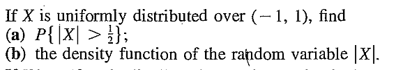
::EXERCISE 62: [rosspdf23.png]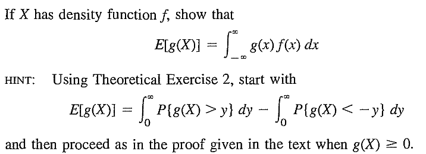 Which is Theo Exr 2??
::EXERCISE 63: [rosspdf24.png]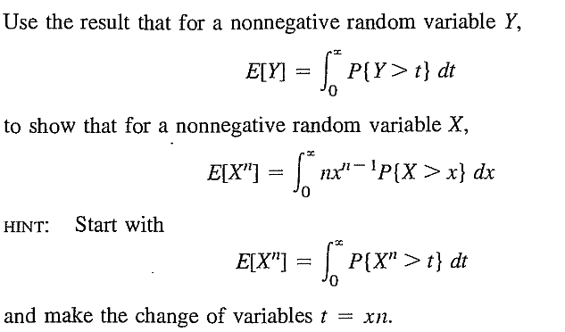
::EXERCISE 64: [rosspdf35.png]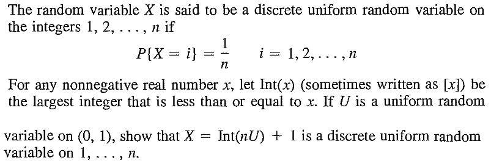